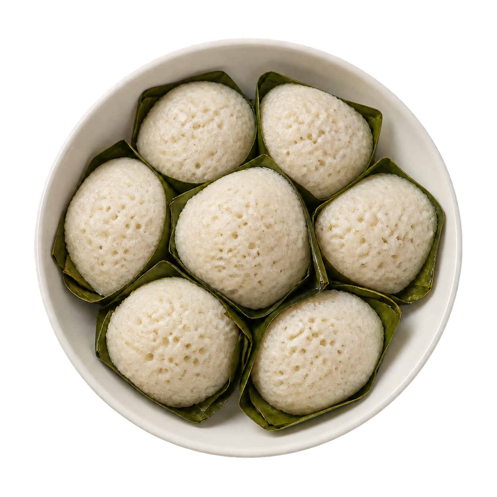

Ablo
- 30 min Préparation
- 12–15 min Cuisson
- 1 à 6 h Fermentation
- 6 personnes env. 15 à 20 galettes
Des petites galettes de maïs et de riz cuites à la vapeur, moelleuses et à peine sucrées. Au Togo et au Bénin, on les mange souvent avec du poisson braisé bien pimenté. Simple, réconfortant, ça se picore facilement.
Ingrédients
- 200 g de farine de riz
- 60 g de farine de maïs
- 100 g de maïzena
- 100 g de sucre
- 1 sachet de levure de boulanger (7 g)
- 1 c. à café de sel
- 60 cl d'eau
- un peu de beurre pour les moules
Ustensiles
Casserole, cuillère en bois, fouet, saladier, torchon, couscoussier (ou marmite + panier vapeur), petits moules ronds (silicone de préférence), couteau.
Préparation
-
Étape 1
Dans une casserole, délayer la farine de maïs dans 25 cl d'eau froide. Porter à feu moyen en remuant sans arrêt à la cuillère en bois. Dès que le mélange épaissit et commence à bouillonner (2 à 3 min), retirer du feu.
-
Étape 2
Laisser refroidir complètement cette bouillie à température ambiante. Étape importante : si la pâte est encore chaude, elle tuera la levure.
-
Étape 3
Quand la bouillie est froide, ajouter progressivement la farine de riz et la maïzena en fouettant, avec le reste de l'eau (35 cl), jusqu'à obtenir une pâte lisse et homogène, sans grumeaux, un peu plus épaisse qu'une pâte à crêpes.
-
Étape 4
Diluer la levure dans 2 c. à soupe d'eau tiède, l'incorporer à la pâte. Ajouter le sucre et le sel, bien mélanger.
-
Étape 5
Couvrir le saladier d'un torchon humide (rincé à l'eau tiède et essoré) puis d'un couvercle. Laisser fermenter dans un endroit chaud (four éteint, lampe allumée) : 1 à 2 h s'il fait chaud, jusqu'à 6 h en hiver. La pâte est prête quand de petites bulles apparaissent en surface et qu'elle a légèrement gonflé.
-
Étape 6
Remplir le bas d'un couscoussier (ou d'une marmite avec panier vapeur) d'eau et porter à ébullition. Beurrer légèrement des petits moules ronds, de préférence en silicone pour un démoulage facile.
-
Étape 7
Remplir les moules de pâte aux ½ à ¾ seulement, car elle gonfle à la cuisson. Les déposer dans le panier vapeur.
-
Étape 8
Couvrir et cuire à la vapeur 12 à 15 min : les galettes sont prêtes quand elles sont fermes et que la pointe d'un couteau en ressort sèche.
-
Étape 9
Démouler délicatement et servir tiède, avec une sauce tomate pimentée et du poisson frit ou braisé.